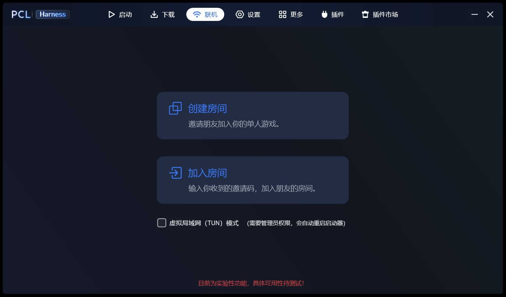

开源 · 可审阅 · 可共建
所有代码公开在 GitHub，构建流程与版本记录一目了然。发现问题可以直接提 Issue，有好想法也欢迎提交 Pull Request。
github.com/Badqf/PCL-Harness ↗仓库GitHub公开源码
反馈Issues社区共建
核心功能与亮点
把细节做到位，体验自然不一样
六个设计原则，贯穿产品的每个模块。
产品演示
眼见为实，看看它如何工作
下方为界面示意占位图。替换为真实截图时，把图片放进 assets/img/ 并修改 index.html 中的对应面板即可。



HOW IT WORKS
三步开始使用
用户评价
来自真实使用者的反馈
以下为模板示例文案，请替换为已获授权的真实评价。
联系我们
有问题，或想一起把它做得更好？
这是开源项目，最有效的沟通方式是 GitHub Issues。填写右侧表单会生成一份预填好的 Issue 草稿，不会向任何服务器发送数据。